Demo 13
This object is a fan; the model can be found in the INRIA model repository as a .3ds file, and is imported into Blender with Blender ’ s .3ds import script. Its title is “fan_1” (See References).
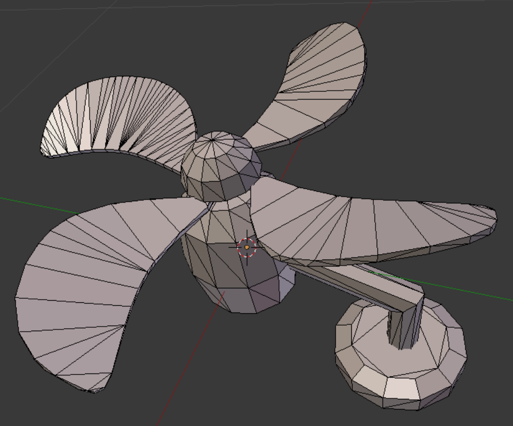
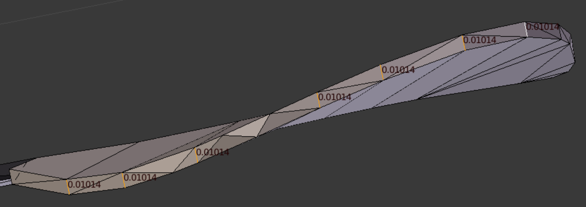
For us, the most interesting things about the fan are its blades. The blade thickness is constant, but the edges are not aligned to a major axis, they run perpendicular to the top and bottom surfaces of the blades.
We will suppose that more detail is desired in the shape of the blade edge outlines, and we will undertake an interpolation process to provide it. We start by adding a bezier circle to the scene, and hide all but one fan blade, eliminating its bottom surface.
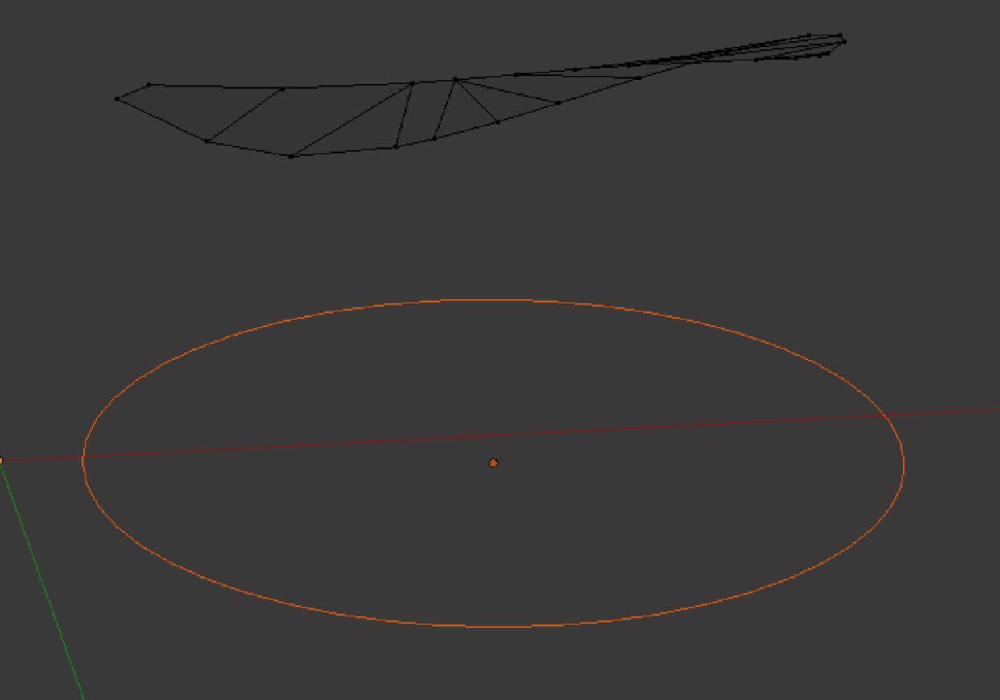
In Blender, curves are a separate system from normal block mesh, and must be dealt with appropriately. The top surface of the blade has 23 vertices. We use the ‘w’ (special) menu to subdivide the bezier circle into 16 parts. We can subdivide between any two control points to cover the last 7 vertices. We will snap each control point to a vertex. The procedure is as follows, with EM designating Edit Mode and OM designating Object Mode. (We assume that the 3D cursor has been selected as pivot point.)
1. OM. Select the mesh.
2. EM. Select a vertex. Use Shift + ‘s’, then ‘u’ to snap the 3D-cursor to the selected vertex.
3. OM. Select the curve.
4. EM. Select a control point. Use Shift + ‘s’, then ‘t’ to snap the control point to the 3D-cursor (and to the desired vertex).
5. OM. Select the mesh again.
With the above procedure all vertices in the surface can be supplied with control points of the bezier circle. The view right is a top view snapshot as the final control point is assigned. We see that some smoothing of the edge outline will result from using the curve to rebuild the blade.
The assumed starting alignment is that defined in the Object Mode ‘v’ menu, with the Automatic setting. Some adjustment of control handles improves the form of the curve. (This is still a top view.)
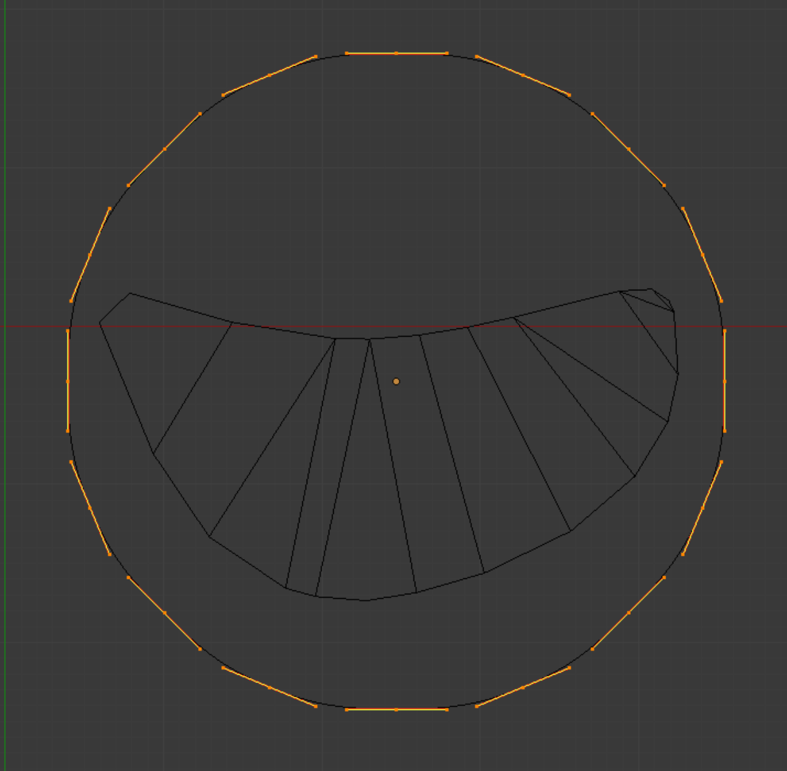
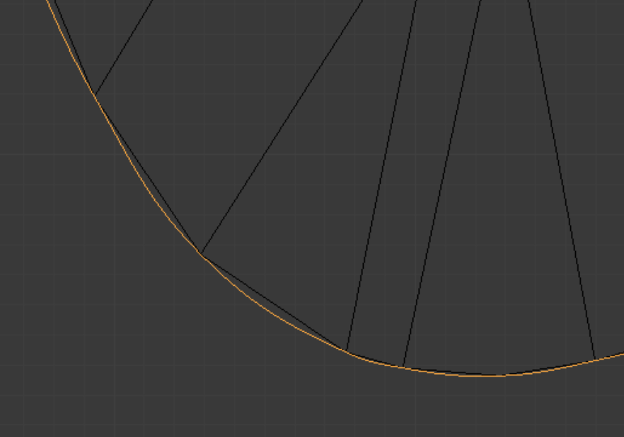
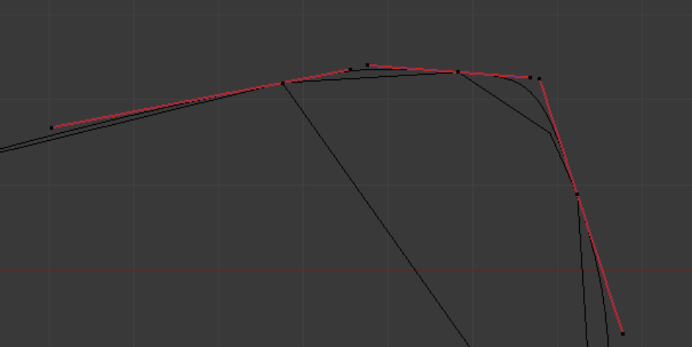
From some arbitrary perspective it can be see that the Automatic control point setting generally follows the path of vertices well.
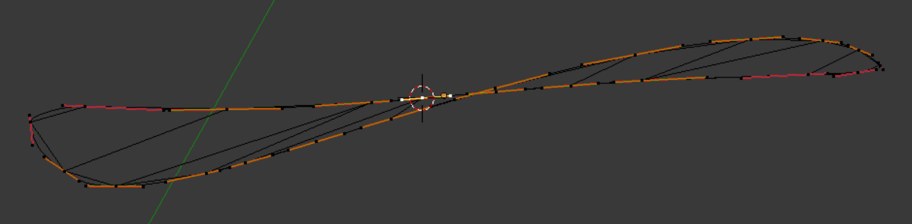
At this point the mesh surface can be deleted. In Object Mode we convert the curve to a mesh, using the Alt + ‘c’ menu.
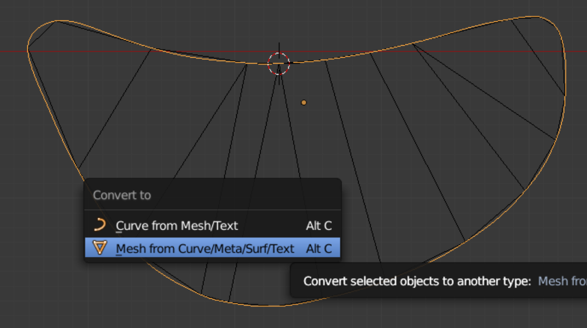
Conditions contained in the pictures: 1. On entering Edit Mode we find many superfluous vertices have been created. The Limited Dissolve command reduces these to a manageable number. 2. We reduce the Max Angle field from 5 degrees to 2 degrees to preserve a few more vertices than retained by the default 5 degrees. 3. Then simply pressing ‘f’ gives a big common n-gon. 4. The n-gon retains the warp of the original surface.
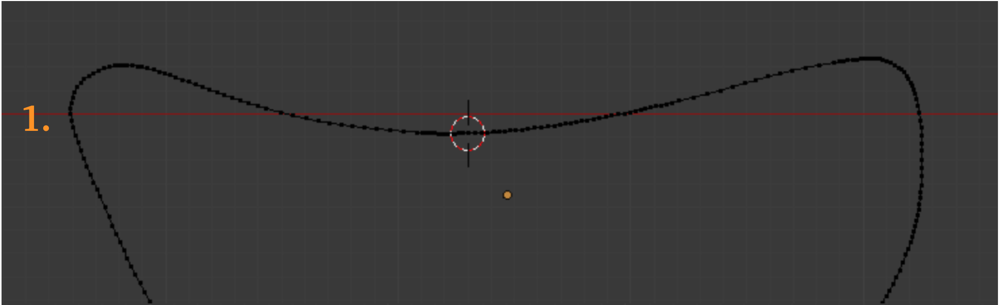
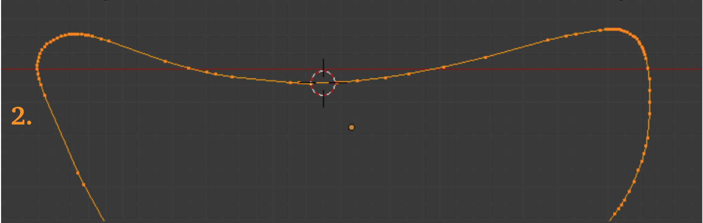
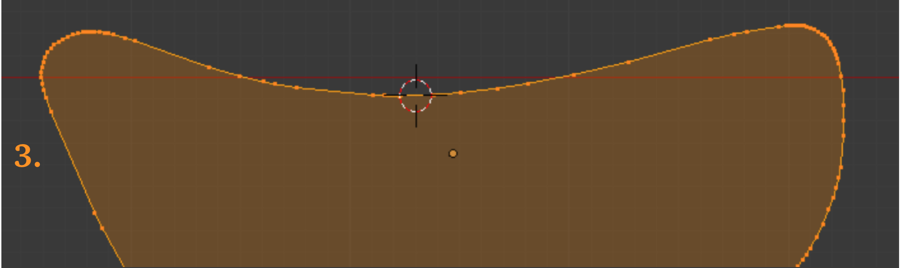
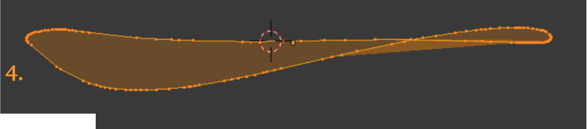
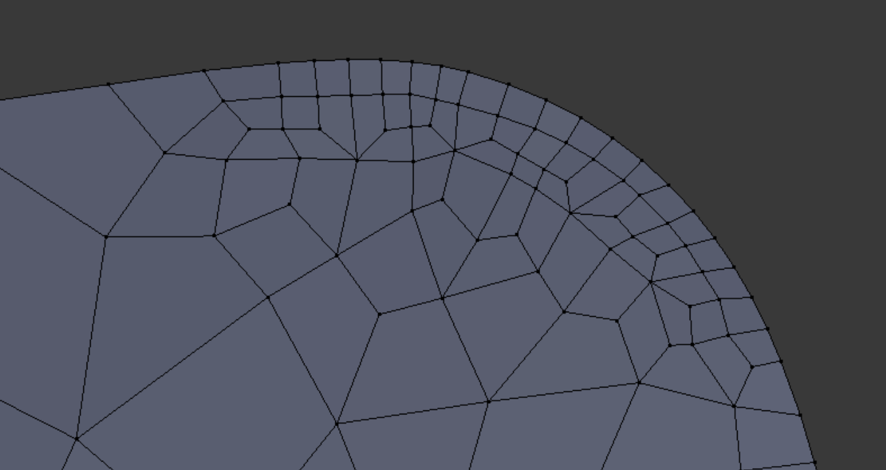
Using the knife tool, we create a pattern of faces. Because of the rapid change of surface contour, all changes in vertex positions are accomplished by sliding, not by grabbing.
After the mesh meets minimum quality requirements for Scaled Jacobian, we delete all but the primary surface. That surface is duplicated (so that a bottom face will be left behind when the duplicated face moves in its intended extrusion path). Then the Extrude Individual command is pressed in the Toolbox panel. That command has the advantage of extruding in a normal direction, the main thing we need.
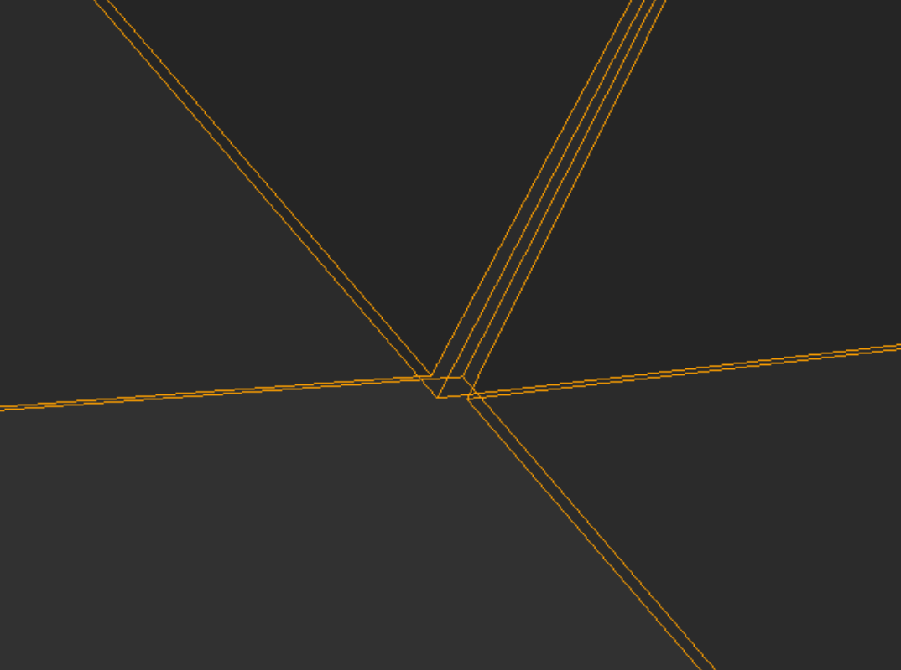
The Extrude Individual command has another nice quality: it extrudes edges as well as faces (unlike the Extrude Region command). This saves a great deal of time. However, there is one drawback to the command, which is that it does not keep vertices integrated with those in neighboring edges. The highly zoomed view right shows the result of this shortcoming. Here corners of elements overlap. Elsewhere there may be gaps.
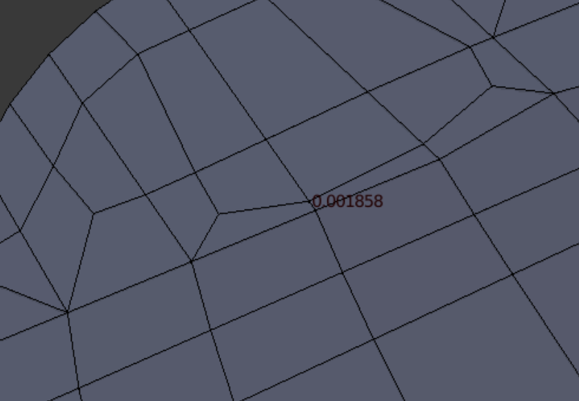
We solve the vertex dislocation problem by inspecting the mesh for the shortest legitimate edge, then setting the Remove Doubles dialog for a distance shorter than this. Then we select all and Remove Doubles. This merges most vertex sites, but it still proves necessary to scout out the new surface and join a few cases of multiple vertices.
A test of the Remove Doubles command shows that, when faced with determining the location of a group of points, Blender does not calculate the centroid, but rather chooses one point as the winning location. This is not what we would consider the ideal behavior.
When working on quality improvement, we run a repeated circuit through Paraview, Blender, Blenbridge, and Gmsh. Tweaking little by little, we attempt to improve one or a few elements at a time. The thin elements of the fan blade make getting a satisfactory Diagonal score challenging, although the low number of total elements makes subdividing the mesh unnecessary.
At right is shown the final snapshot of Scaled Jacobian quality. It meets the Verdict standard.
The view at right shows the final evaluation of Diagonal measure, which also meets Verdict standards.
The final mesh contains 434 elements and 999 nodes. For a finer treatment, Gmsh could easily subdivide it, which would yield 3472 elements and 5601 nodes.
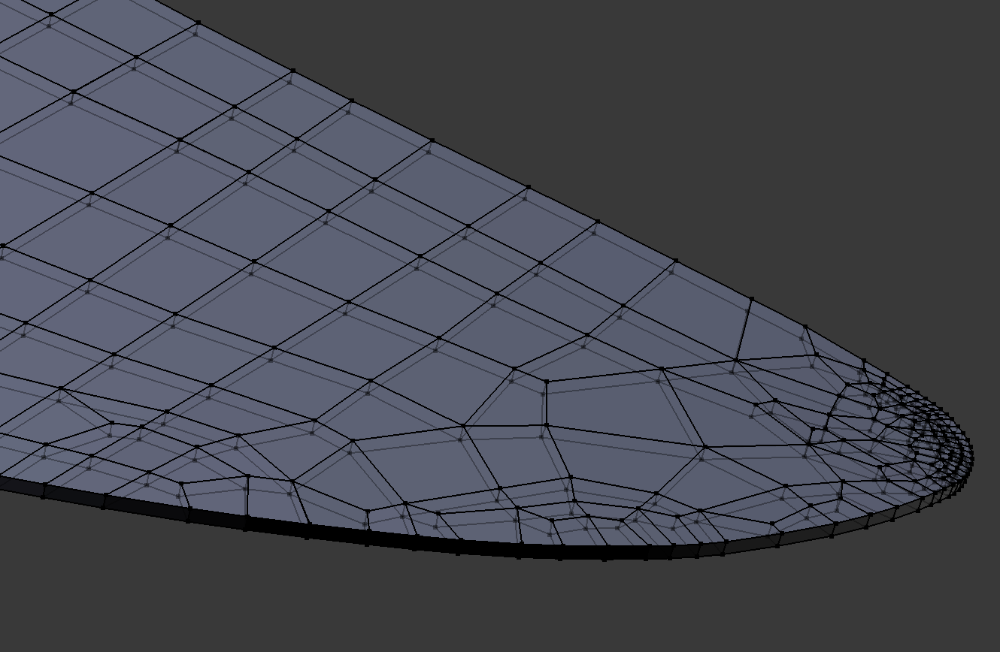
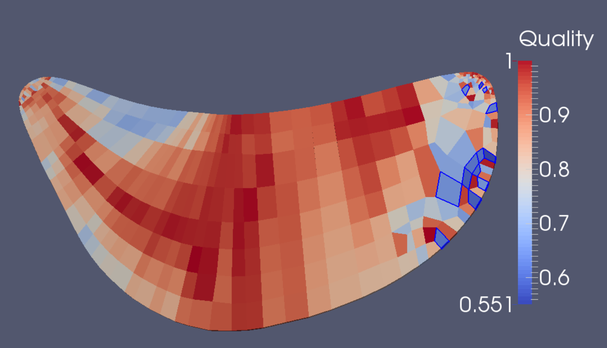
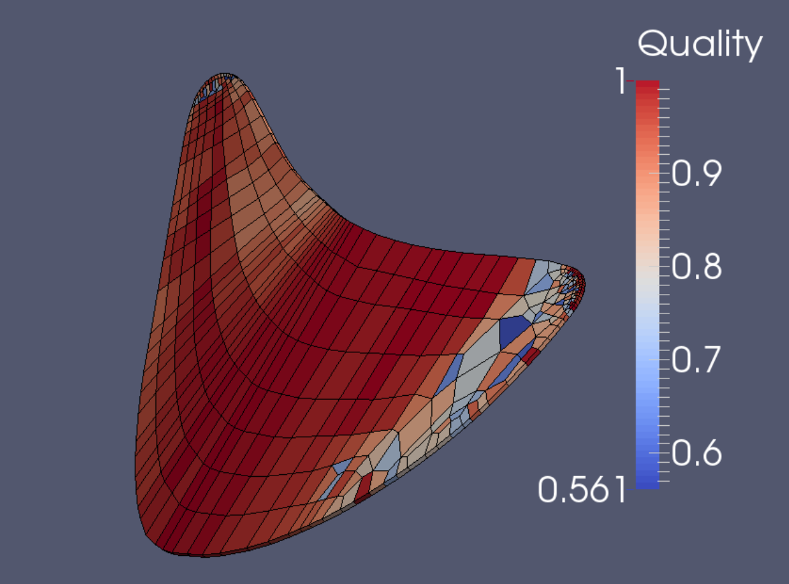
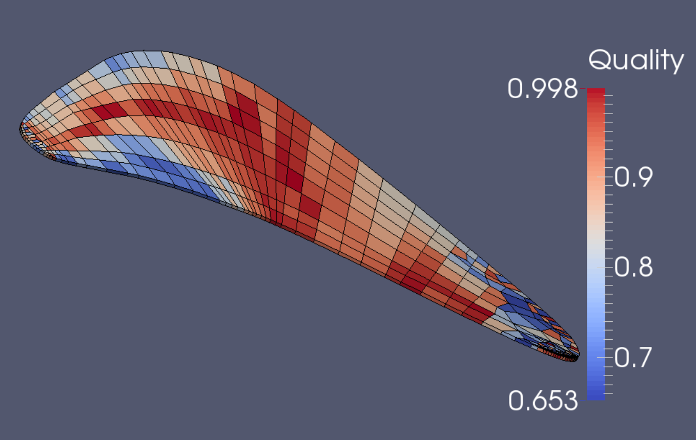
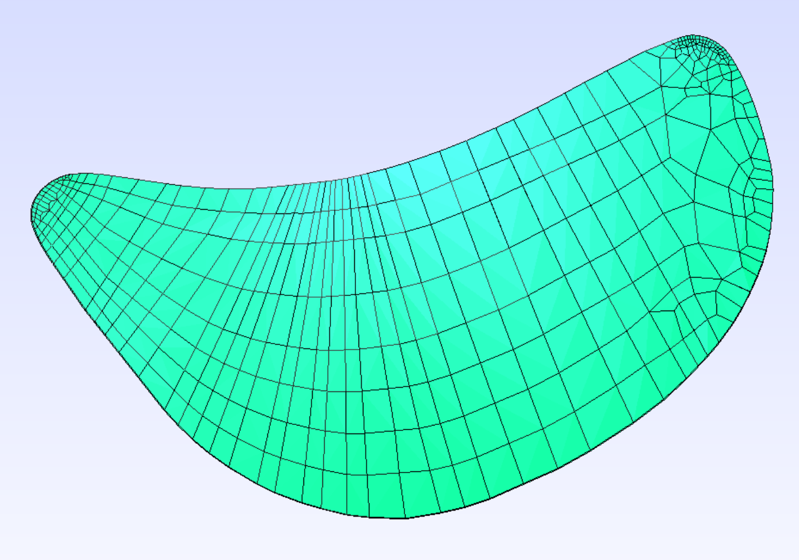